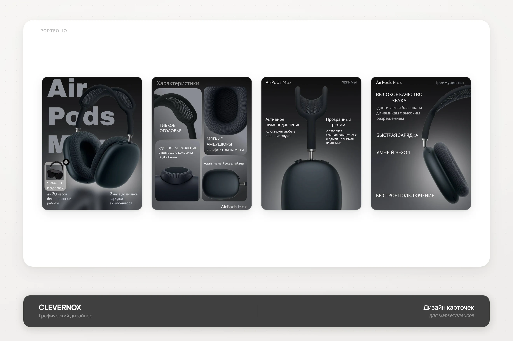
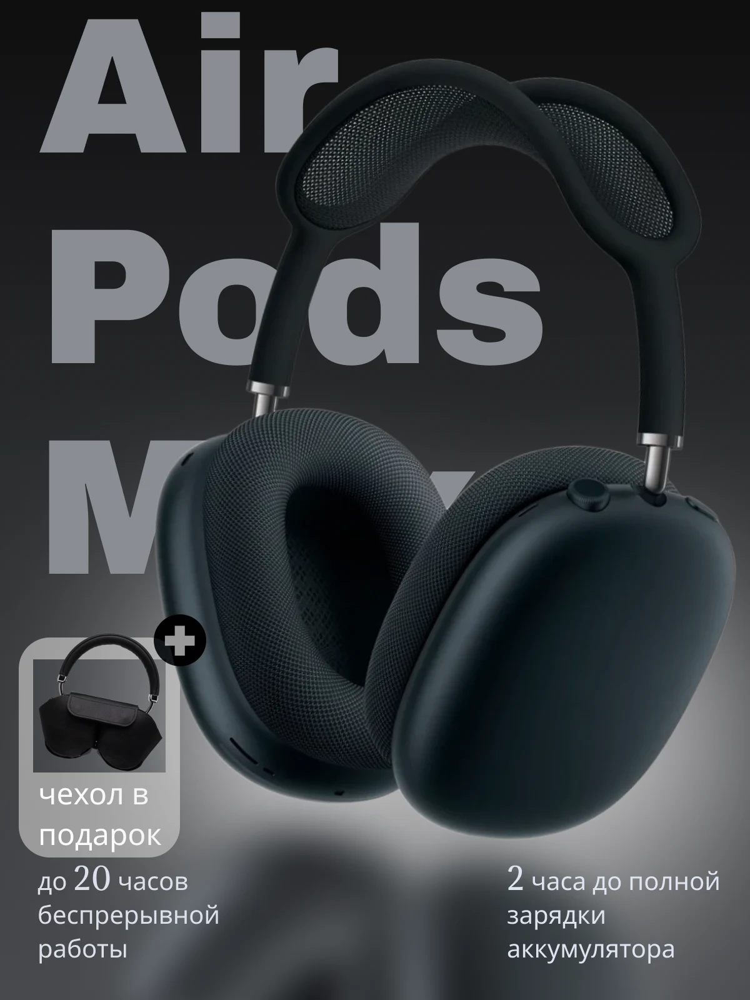
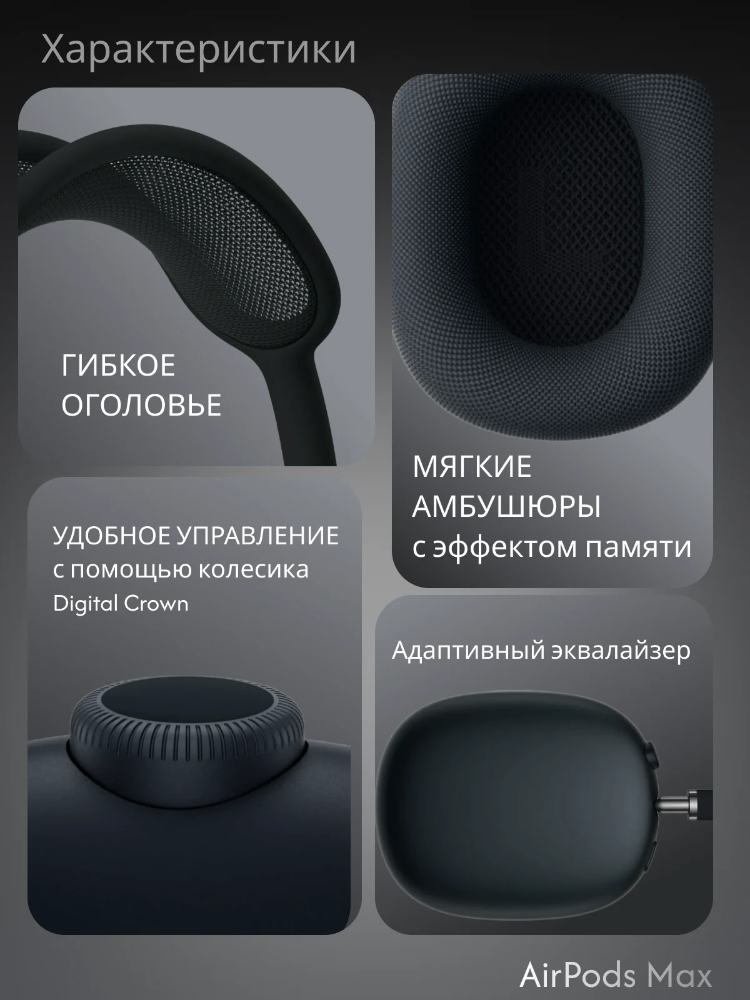
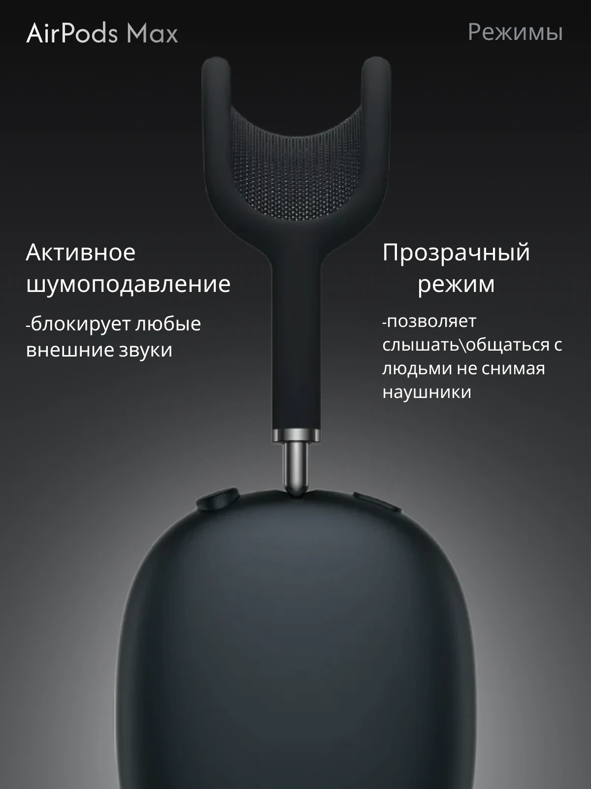
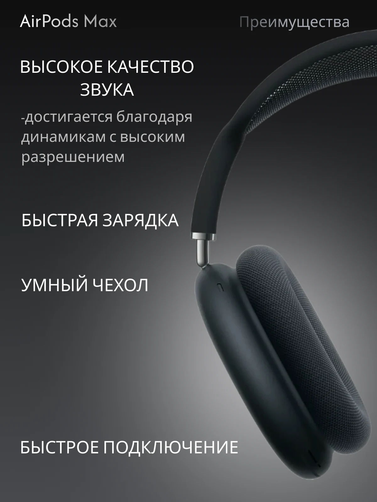

AirPods Max
Серия инфографических карточек для беспроводных наушников AirPods Max: главный слайд, характеристики, режимы работы и преимущества.

- Клиент
- Продавец электроники на маркетплейсе
- Задача
- Разработать серию карточек товара для маркетплейса под беспроводные наушники AirPods Max: главный слайд с бонусом, детальные характеристики, режимы шумоподавления и ключевые преимущества — в едином тёмном премиальном стиле, характерном для категории премиальной аудиотехники.
- Роль
- Графический дизайнер: концепция серии, инфографика, типографика, ретушь и компоновка предметной съёмки крупным планом, подготовка под формат карточек маркетплейса.
Категория премиальных наушников на маркетплейсе визуально ориентируется на официальный стиль производителя — глубокий чёрный фон, холодный свет, крупный план материалов. Задачей было удержать этот узнаваемый премиальный код, но выстроить внутри него полноценную последовательность карточек с разным фокусом внимания, а не повторять один и тот же ракурс продукта.
Первая карточка работает на первое впечатление и добавляет ценность через «чехол в подарок» и ключевые цифры автономности и зарядки. Вторая переходит к детальным крупным планам конструкции — гибкое оголовье, мягкие амбушюры, колесо управления Digital Crown, адаптивный эквалайзер — каждая деталь снята отдельным крупным кадром, что важно для дорогого товара, где решает именно качество материалов. Третья раскрывает функциональные режимы (шумоподавление и прозрачный режим) через макросъёмку амбушюра. Четвёртая закрывает список рациональных преимуществ коротким текстом на тёмном фоне, чтобы покупатель мог быстро сверить характеристики без чтения полного описания.




Серия карточек последовательно раскрыла премиальный продукт от первого впечатления до детальных характеристик и режимов работы, сохранив фирменный тёмный визуальный код категории.